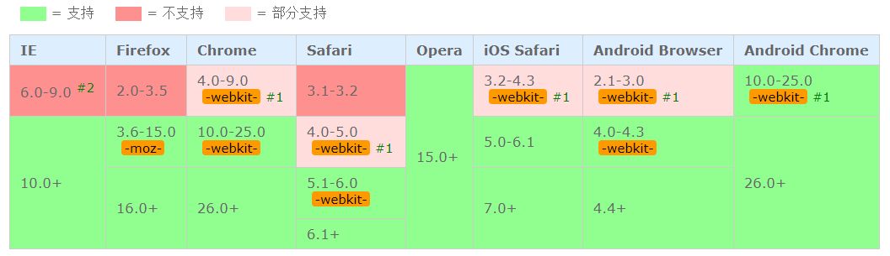

最近做项目的时候，看到设计图有很多用到颜色渐变的，背景颜色渐变、边框颜色渐变、文字颜色渐变，所以总结一下这几种用法
背景颜色渐变
linear-gradient() 函数用于创建一个线性渐变的 “图像”。
为了创建一个线性渐变，你需要设置一个起始点和一个方向（指定为一个角度）的渐变效果。你还要定义终止色。终止色就是你想让Gecko去平滑的过渡，并且你必须指定至少两种，当然也会可以指定更多的颜色去创建更复杂的渐变效果。
background: linear-gradient(direction, color-stop1, color-stop2, …);
direction代表用角度值指定渐变的方向（或角度）。
border渐变色
为边框添加渐变色1
2
3
4
5border-width:2rpx;
border-style: solid;
border-image: -webkit-linear-gradient(left, #bd23ff , #793bf9) 2 30;
border-image: -moz-linear-gradient(left, #bd23ff, #793bf9) 2 30;
border-image: linear-gradient(left, #bd23ff , #793bf9) 2 30;
例子：1
2
3
4
5
6
7
8
9
10
11
12
13
14
15
16
17
18
19
20
21
22
23
24
25
26
27
28
29
30
31
32
33
34.gradient-block-vertical {
float:left;
margin:50px;
width:250px;
height:250px;
box-sizing:border-box;
border:20px solid transparent;
background-clip:padding-box,border-box;
background-origin:padding-box,border-box;
background-image:linear-gradient(45deg,red,blue),linear-gradient(#5c5fa5,#893f60);
}
.gradient-block-horisontal {
margin:50px;
float:left;
width:250px;
height:250px;
box-sizing:border-box;
border:20px solid transparent;
background-clip:padding-box,border-box;
background-origin:padding-box,border-box;
background-image:linear-gradient(90deg,#fff,#fff),linear-gradient(90deg,#5c5fa5,#893f60);
}
.gradient-block-diagonal {
float:left;
position:relative;
width:250px;
height:250px;
margin:50px;
box-sizing:border-box;
border:20px solid transparent;
background-clip:padding-box,border-box;
background-origin:padding-box,border-box;
background-image:linear-gradient(45deg,#fff,#fff),linear-gradient(45deg,#5c5fa5,#893f60);
}
效果图如下：
角度倾斜如何看
字体渐变色
1 | font-size: 26rpx; |
linear-gradient
兼容性

1、 使用过时的语法：-webkit-gradient(linear,…)
2、 IE6.0-9.0使用私有滤镜来实现该效果: progid:DXImageTransform.Microsoft.Gradient().aspx”)
background-clip
规定背景的绘制区域
兼容性：
IE9+、Firefox、Opera、Chrome 以及 Safari 支持 background-clip 属性。
注释：Internet Explorer 8 以及更早的版本不支持 background-clip 属性。
text-fill-color
检索或设置对象中的文字填充颜色
具体查看：text-fill-color说明